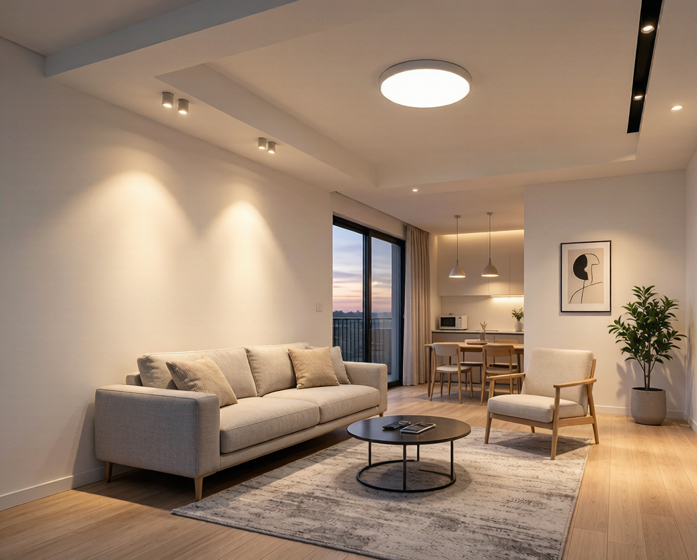

如果你最近也在纠结"到底还该不该买Zigbee灯"——
你不是一个人。
过去两年，每天都有客户问我："Matter是不是要一统天下了？Zigbee会不会3年内被淘汰？我现在装的Zigbee灯，以后还能用吗？"
老实说，这个问题我回答了几百遍。但每次回答，我都能感受到提问者背后的焦虑——花几千块装全屋智能灯，谁都不希望自己的投资打水漂。
今天我用一篇长文，把这件事彻底说清楚。
先看大背景：为什么大家都在担心Zigbee？
2024-2025年，Matter协议确实势头凶猛。苹果、Google、Amazon、Samsung四大巨头全部站台，Matter 1.5甚至加入了摄像头和能源管理，看上去仿佛要一口吞下整个智能家居市场。
与此同时，Thread协议作为Matter的首选传输层，打出了"IPv6原生""功耗更低""延迟更优"的招牌。一时间，"Zigbee即将过时"成了各大家居论坛的热门话题。
但事实是：Zigbee联盟不仅没有坐以待毙，反而在2025年11月放了个大招——Zigbee 4.0。
这个版本的名字可能很多人都没听说过（因为媒体都喜欢报道Matter），但它带来的三项革新，每一条都是冲着用户痛点去的。
Zigbee 4.0 的第一个大招：SUZI — 子GHz远距离通信
先说一个常识：Zigbee 3.0用的是2.4GHz频段，和Wi-Fi、蓝牙共用一个拥挤的信道。在密集住宅区，2.4GHz的信道拥堵已经到了令人崩溃的程度——这也是很多用户抱怨"Zigbee设备掉线"的根源之一。
Zigbee 4.0推出的**SUZI（Sub-GHz Zigbee）**认证，直接跳到了800MHz频段（欧洲标准，中国后续也会有对应频段）。
这意味着什么？
| 对比维度 | Zigbee 3.0 (2.4GHz) | Zigbee 4.0 SUZI (800MHz) |
|---|---|---|
| 穿墙能力 | 中等，2堵墙后信号衰减明显 | 强，3-4堵墙依然稳定 |
| 干扰风险 | 高（Wi-Fi/蓝牙/微波炉共享频段） | 低（独立频段，干扰极少） |
| 通信距离 | ~75米（室内） | ~250米+（室内） |
| 应用场景 | 同一楼层小户型 | 别墅、大平层、跨层部署 |
说白了，Zigbee 4.0的SUZI直接对标Z-Wave的长距离优势。以前说"大房子智能灯建议用Z-Wave"，现在Zigbee 4.0自己就能搞定。
第二个大招：Zigbee Direct — 用蓝牙就能配网
这是我最喜欢的一个功能，因为它解决了一个真实到令人发指的痛点：Zigbee设备配网太麻烦了。
用过Zigbee灯的人都知道：长按开关3次→等30秒→打开App找设备→祈祷能搜到→不行就再来一轮。对新手来说，这个体验简直是噩梦。Matter的QR码一扫即连，确实吊打老Zigbee。
Zigbee 4.0把蓝牙直连（Zigbee Direct）变成了强制标准。新设备靠近手机，App直接通过蓝牙发现→配网→接入Zigbee网络，全程不需要开关狂按。
而且这个功能不需要额外的硬件——一颗同时支持Zigbee+BLE的芯片现在只要几块钱，成本几乎没增加。
第三个大招（也是最被低估的）：完全向下兼容
Matter的生态有一个尴尬的事实：你家的老Zigbee设备，理论上只能通过Gateway桥接才能接入Matter体系。换句话说，迁移成本不低——你不是"升级"，而是"替换"。
Zigbee 4.0则完全不同：所有Zigbee 3.0设备可以无缝接入Zigbee 4.0网络，固件升级即可，不需要换任何硬件。
一个已经在家里跑了3年的Zigbee网关，升级固件后就能管理Zigbee 4.0的新设备。这才是真正的"向下兼容"——不是让你扔掉旧的，而是让旧的焕发新生。
那问题来了：你到底该选Zigbee还是Matter？
我的结论可能和你想的不一样：两者不是对立的，2026年最佳策略是双模共存。
具体来说：
| 设备类型 | 推荐协议 | 理由 |
|---|---|---|
| 筒灯/射灯/灯带（预算敏感） | Zigbee 3.0/4.0 | 价格最低，生态最成熟，选择最多 |
| 传感器（门磁/人体/温湿度） | Zigbee或Matter/Thread | Zigbee更便宜，Thread延迟更低 |
| 智能网关/中控 | Zigbee+Matter双模 | 同时管理两套设备，为未来留空间 |
| 新装全屋（Apple生态为主） | Matter/Thread优先 | 跨平台体验更好 |
| 摄像头/门锁（高带宽） | Wi-Fi | 协议无关，带宽需求决定的 |
一句话总结：如果你家已经有Zigbee设备在用，Zigbee 4.0是给你吃定心丸的——不用换。如果你现在准备新装，双模网关+Zigbee灯+Matter传感器，是最务实的组合。
最后说点大实话
智能家居协议之争，本质上不是技术的胜负，而是生态的博弈。Matter背后是Apple/Google/Amazon的推手，Zigbee背后是中国市场每年上亿台的出货量。两者谁也干不掉谁。
作为一个做智能灯具的人，我只关心一件事：你买的灯，装上以后能不能稳定用5年以上。
从这一点看，Zigbee 4.0给出的答卷是合格的。它没有推翻重来，而是在成熟的基础上补齐了最需要的短板。这种稳健的进化策略，反而比"下一代协议"更有说服力。
关于作者：Nexlamp耐利普科技，专注涂鸦Zigbee智能照明方案。我们做了84款筒灯和192款射灯，全部基于Zigbee协议。因为我们相信，稳定比花哨重要。
本文仅代表作者观点，协议选型请结合自身需求决策。